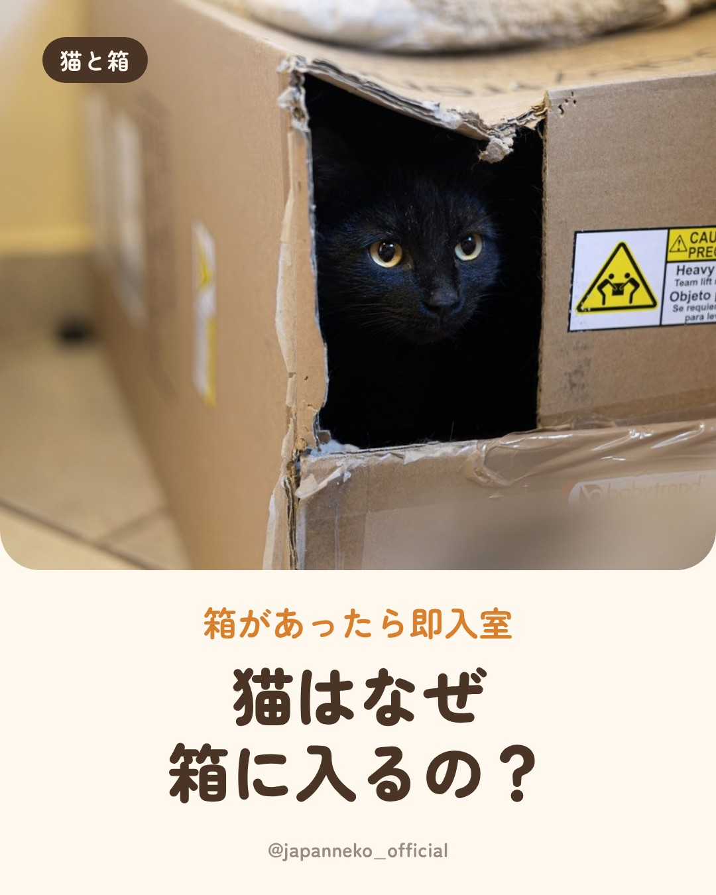
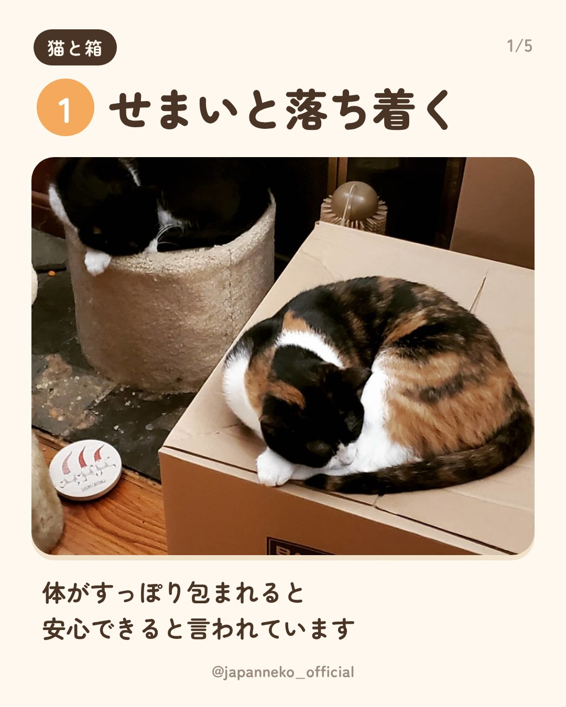
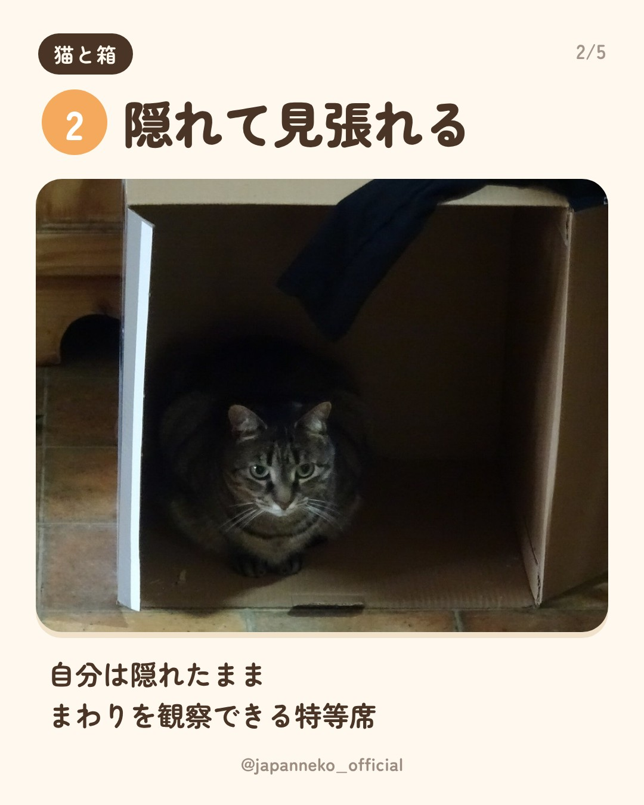
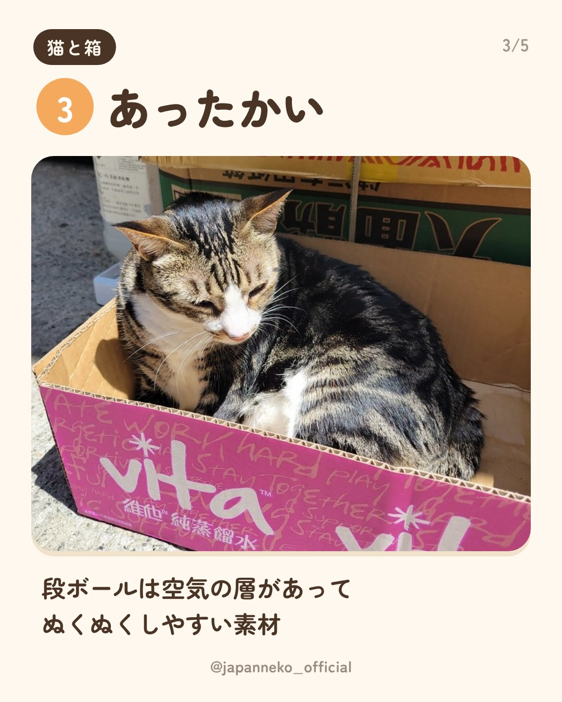
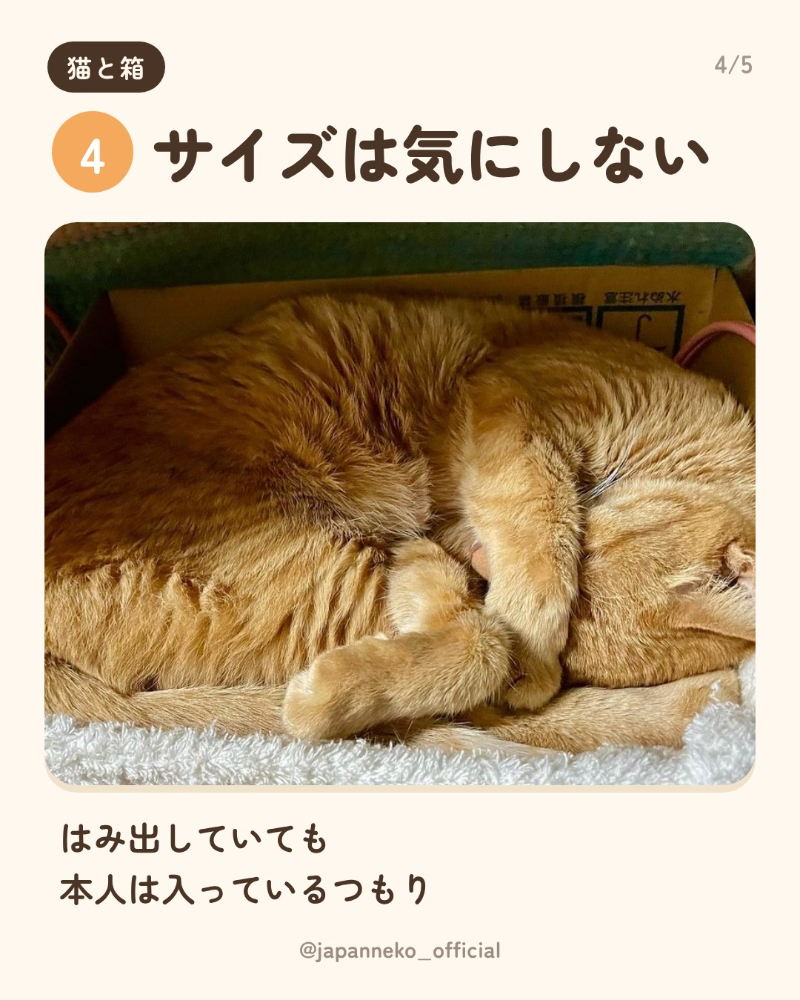
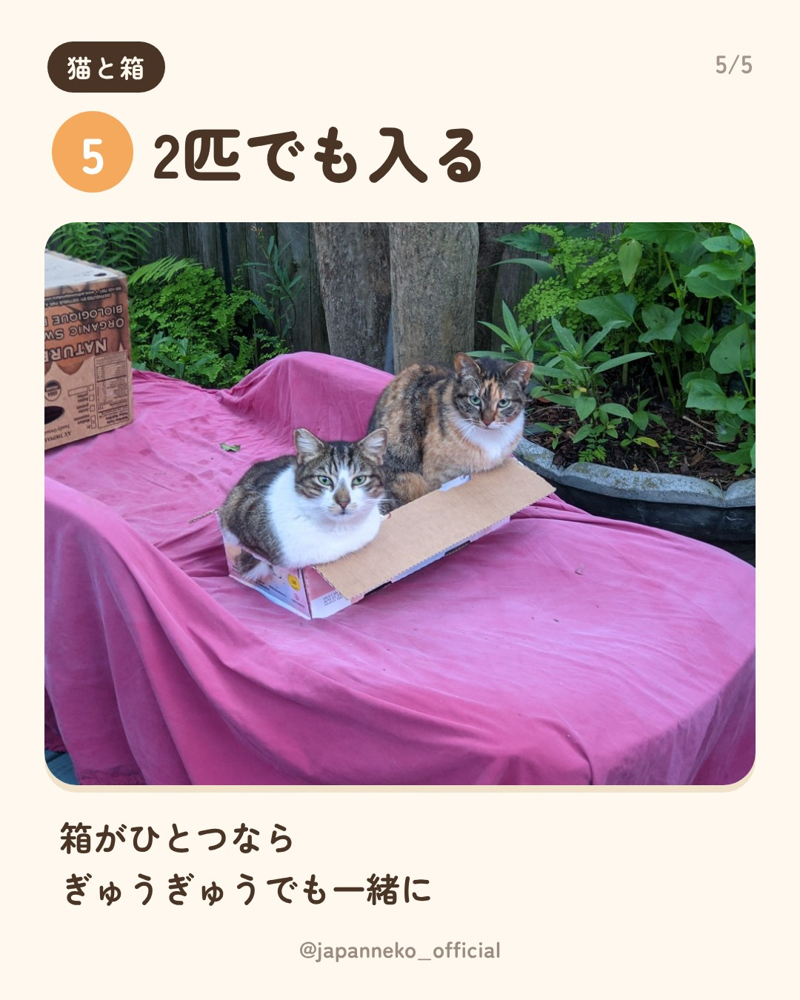
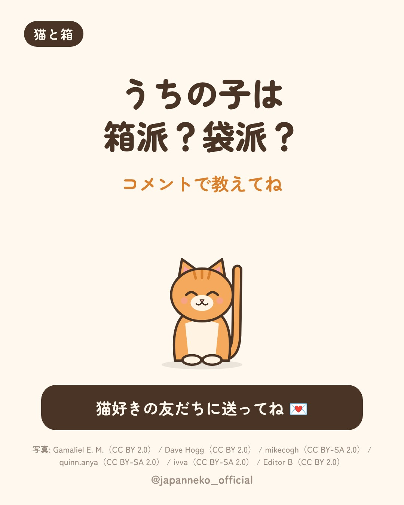

猫はなぜ箱に入りたがるの？
2026-10-21・Instagramで公開
新しい段ボールを置いた瞬間にもう入っている…あるあるですよね📦
せまい場所が落ち着く、隠れて見張れる、あったかい。理由はいろいろ言われています。
📷 写真: Gamaliel E. M.（CC BY 2.0）、Dave Hogg（CC BY 2.0）、mikecogh（CC BY-SA 2.0）、quinn.anya（CC BY-SA 2.0）、ivva（CC BY-SA 2.0）、Editor B（CC BY 2.0）／Flickr
※CC BY-SA の写真を使った画像は CC BY-SA で公開しています






